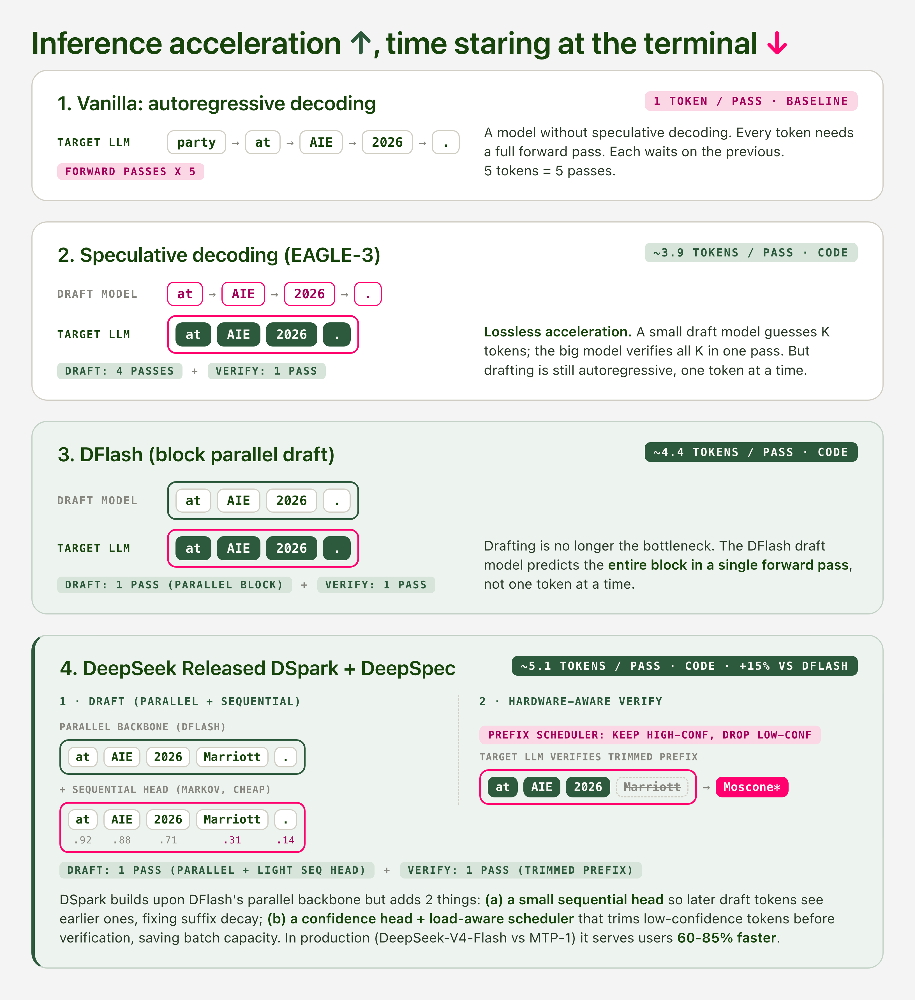

Speculative Decoding: What's Measured, What's Missed, and What's Next
1 · Introduction
The market wants more tokens. Agent workflows chain dozens of model calls per task, reasoning models spend thousands of tokens thinking before they answer, and every product built on either one pays for latency twice, once in compute and once in user patience. The ideal answer to this demand is lossless inference acceleration: serve the same model faster without changing what it outputs.
That demand has pulled acceleration steadily deeper into the model itself. Draft models for speculative decoding evolved through three generations in two years, from EAGLE-3's feature-level autoregressive drafting (Li et al., 2025), to DFlash's block-parallel diffusion drafting (Chen et al., 2026), to DSpark's confidence-scheduled verification (DeepSeek, 2026). Frontier labs moved in the same direction from the training side: DeepSeek pushed FP8 into pre-training, gpt-oss shipped MXFP4 weights with quantization-aware training, K2-Thinking reported every benchmark at INT4, and Kimi K3 ships the speculator itself, a draft model fine-tuned and validated before release (Kimi Team, 2026).
Inference providers now run some combination of quantization, speculative decoding, and serving-level optimizations on nearly every hosted model, and the field reports progress in tokens per second while describing the acceleration as lossless. What no one owns is the quality of the accelerated output. Outside of coding and math, almost no one has checked whether the accelerated model still behaves like the original. The evaluation surface behind the word "lossless" is narrow, and the claim is rarely tested directly.
This resource walks through what the field measures (acceptance rate, and why theory says that is enough), what that measurement misses (the assumptions that break in production, demonstrated with a knob you can turn yourself), and what comes next (who should own acceleration quality, and the training objective nobody has built yet).
2 · What's Measured?
2.1 · The metric
Speculative decoding reports progress with two numbers. Acceptance length is how many draft tokens the target model accepts per verification step, on average. Tokens per second is the throughput the user feels. The first drives the second, but they are not the same thing: drafting has its own cost, so an acceptance length of 3 does not mean a 3x speedup. Reading acceptance length correctly is the first skill this section teaches. It counts accepted proposals, not saved passes.
2.2 · Why theory says this metric is enough
The mechanism fits in one sentence: a small draft model proposes K tokens, and the large target model verifies all K in a single forward pass. This works because autoregressive decoding is memory-bandwidth bound. Generating one token streams the entire weight matrix out of HBM while the compute units sit mostly idle, so a forward pass over K tokens costs nearly the same as a pass over one.
Verification uses rejection sampling: each proposed token is accepted with probability \( \min(1, p(x)/q(x)) \), where \(p\) is the target distribution and \(q\) is the draft distribution, and the first rejected position is resampled from a corrected distribution. This procedure guarantees the output distribution is identical to the target model's (Leviathan et al., 2023; Chen et al., 2023). Correctness is guaranteed by construction, so evaluation only has one dimension left to care about, which is efficiency. This theorem is the foundation of how the entire field evaluates itself. It is also the assumption Section 3 examines.
2.3 · Three generations of draft models
Each generation removes the bottleneck of the previous one.
EAGLE-3 (Li et al., 2025) drafts at the feature level instead of the token level. A single trained decoder layer reuses the target model's hidden states and proposes tokens autoregressively. Acceptance improves, but drafting itself is still sequential, one token at a time.
DFlash (Chen et al., 2026) replaces the autoregressive draft with block diffusion. The draft predicts an entire block of 16 tokens in a single parallel forward pass, with the target's hidden states injected into every draft layer. Drafting stops being the bottleneck.
DSpark (DeepSeek, 2026) builds on the parallel backbone and adds two things: a small sequential head so later draft tokens can see earlier ones, and a confidence head with a load-aware scheduler that trims low-confidence tokens before verification, saving batch capacity.

2.4 · The metric is also the training objective
How a draft model gets trained explains why acceptance rate dominates evaluation. The Kimi K3 report (§4.1.4) describes the current recipe. The target model is frozen. Only a single draft layer and a feature-fusion projection are updated. During training the draft unrolls seven steps and consumes its own outputs, simulating the recurrent drafting it will do at inference time. And the loss is
\[ \mathcal{L}_{LK} = -\log \sum_{x \in \mathcal{V}} \min\big(p(x),\, q(x)\big) \]
which is the negative log of the per-token acceptance probability itself (Samarin et al., 2026). The training objective and the evaluation metric are the same number. A draft model is trained to be accepted, and then graded on how often it is accepted.
2.5 · Reproduce the numbers
The headline numbers are reproducible on one GPU. Serving Qwen3-8B with its official EAGLE-3 head:
vllm serve Qwen/Qwen3-8B -tp 1 \
--speculative-config '{"model": "RedHatAI/Qwen3-8B-speculator.eagle3",
"num_speculative_tokens": 3, "method": "eagle3"}'The model card reports an acceptance length of 2.4 to 2.8 on a single A100.
2.6 · What the field evaluates on
Where do these numbers come from? DeepSpec, DeepSeek's open-source training and evaluation stack for draft models, is a representative example. Its evaluation harness runs nine datasets: gsm8k, math500, and aime25 for math; humaneval, mbpp, and livecodebench for code; mt-bench, alpaca, and arena-hard-v2 for conversation. The center of gravity is verifiable, predictable tasks, the kind where the next token is easy to guess.
Which raises the question this article turns on. If acceleration has only ever been evaluated on this narrow a slice of what models do, can we claim the inference is lossless? What happens in the domains nobody measured?
Takeaways. The field reports acceptance length and tokens per second. Evaluation collapsed to a single efficiency dimension because rejection-sampling verification guarantees the output distribution exactly, and everything downstream inherits this assumption. The training objective converged onto the same number: the LK loss is the negative log of per-token acceptance probability, so drafts are trained on the metric they are graded with. And the evaluation datasets concentrate on verifiable, low-entropy tasks.
3 · What's Missed?
3.1 · The eval never grades
Start with a code fact. The nine datasets in Section 2.6 are not used the way their names
suggest. In DeepSpec's eval.py, gsm8k and humaneval supply prompts, and the
harness records four acceptance metrics per run: draft tokens per proposal, acceptance
length, verify rate, and acceptance rate by position. It never checks whether the generated
answer is correct. A search across the codebase finds no grader, no judge, no pass@1, no
exact match, no accuracy metric of any kind. GSM8K is not a math test here. It is a traffic
sample.
This means the lossless claim has never been directly verified even on math and coding. It rests entirely on the theorem from Section 2.2.
3.2 · The proof covers a narrow road
The theorem guarantees exactness for one step: exact rejection-sampling verification against the target distribution. A production serving stack is longer than that. Quantized weights and KV caches, cache-aware routing, prefill-decode disaggregation, and relaxed acceptance rules all sit outside the proof's assumptions. vLLM's own documentation describes its typical-acceptance mode as trading response quality for speed (vLLM docs).
The gap between theory and stack shows up in measurement. In LosslessBench, the same GLM 5.2 model served through a vendor's accelerated stack (fp4, speculative decoding, kv routing, prefill-decode disaggregation) lost 5.6 points on frontend design tasks, 76.9 to 71.2, relative to the reference deployment. Kimi K3, whose acceleration is trained and shipped by the model owner, lost 0.3 points on the same evaluation. Both deployments would report healthy acceptance rates. Only one of them preserved behavior.
3.3 · Turn the knob yourself
The assumption-breaking knob is in the official code. DeepSpec's evaluation exposes
--confidence-threshold: when the draft's confidence exceeds the threshold,
verification stops early and the remaining draft tokens are accepted without being checked.
This is the lossless-for-speed trade in a single flag.
The experiment, then, is direct. Run the same prompts across a sweep of thresholds, record acceptance metrics the way the harness already does, and additionally grade the outputs for task correctness. As the threshold loosens, acceptance climbs and task accuracy falls.
The point of doing this by hand is pedagogical. Acceptance rate is not accuracy, and after this sweep the learner has seen the two numbers move in opposite directions on the same model and the same prompts.
3.4 · The verified domains are not the used domains
Who actually hits these accelerated endpoints, and with what? Public usage data from OpenRouter's model rankings (openrouter.ai/rankings) shows that programming is large but far from alone: roleplay and creative writing, marketing copy, translation, and agentic workflows account for a substantial share of real traffic. The verification effort, meanwhile, concentrates on math and code.
The mismatch has a mechanical reason to matter. Acceptance rate is domain-conditional. Code and math are low-entropy, the draft guesses well, and acceptance is high. Creative and open-ended text is high-entropy, and acceptance drops. The domains where verification is densest are exactly the domains where acceleration is least likely to misbehave. Providers validate where it is easy, users live where it is not, and the expectation gap between the two is the hole this article is pointing at.
3.5 · LosslessBench, a way to measure it
Raising the question comes with an obligation to propose a measurement. LosslessBench runs the same task suite against a reference deployment and an accelerated deployment of the same model, across five domains: coding, agent workflows, creative writing, guardrails, and frontend design. Each pair of outputs is graded for task behavior, not for token overlap.
The headline finding: frontend design lost 5.6 points under the accelerated stack while four of the five domains showed no significant gap. The degradation is domain-localized, which is exactly what acceptance-rate reporting cannot see. The failure is also qualitative, not cosmetic:


3.6 · Scope statement
Two honest limits on everything above. First, the lossless theorem is distribution-level, not sequence-level. Even under exact verification at temperature 1, an individual output can differ from what the reference deployment would have produced; the guarantee is that outputs are drawn from the same distribution, not that any single generation matches. Second, all numbers in this article are measured at batch size 1 and low concurrency. Under high concurrency speculative decoding degrades and serving engines may disable it entirely, so production behavior at load is a separate question from everything measured here.
Summary. The standard evaluation harness never grades outputs; the lossless claim rests on a theorem, not on measurement. The theorem covers exact verification only, and the measured gap between owned and vendor-assembled acceleration is 0.3 vs 5.6 points. A single flag in the official evaluation code converts lossless into lossy, and the resulting curve is measurable by a learner in an afternoon. Verification concentrates where acceptance is naturally highest; real usage concentrates elsewhere.
4 · What's Next?
4.1 · Acceleration is moving into training
The industry is already answering part of the question, not by fixing the eval but by moving the acceleration to where it can be validated before release. The timeline reads step by step. DeepSeek pushed FP8 into pre-training with DeepSeek-V3 (DeepSeek-AI, 2024). gpt-oss shipped MXFP4 weights with quantization-aware training (OpenAI, 2025). K2-Thinking reported every benchmark number at INT4, making the quantized model the official model. Kimi K3 ships the speculator itself: the draft model is fine-tuned as part of post-training, against the deployment-precision target, and validated before the model leaves the factory (Kimi Team, 2026).
This is why the ownership split in Section 3.2 produced a 0.3-point loss on one side and a 5.6-point loss on the other. When the model owner trains and validates the acceleration, the accelerated model is the released model, and there is nothing left for a serving vendor to bolt on unverified. When acceleration is assembled downstream by whoever hosts the model, the lossless claim belongs to no one, and no one checks it. Whoever owns the acceleration owns the quality.
4.2 · The training objective nobody has built
Ownership fixes who validates. It does not change what the draft is trained for. Every published draft-training objective optimizes alignment with the target or acceptance itself: distillation on target outputs in DistillSpec (Zhou et al., 2024), feature regression in EAGLE-3 (Li et al., 2025), and the LK loss that directly maximizes per-token acceptance (Samarin et al., 2026). No published objective trains a draft to preserve the target's behavior on the long tail, the high-entropy domains where Section 3.4 showed acceptance is weakest and verification is thinnest. The closest published work operates at the verification layer instead: Judge Decoding (Bachmann et al., 2025) trains the verifier to accept tokens that differ from the target but preserve quality. Quality-aware draft training is an open seat, and naming it precisely is more useful to a learner than pretending it is solved.
4.3 · Proposal
The evaluation fix is smaller than the training fix, and available today: report behavior alongside speed. A speculative-decoding eval should publish three numbers together, acceptance rate, task correctness on the same generations, and the domain coverage of the prompt set. The first is what the field already reports. The second costs one grading pass over outputs the harness already produces. The third is a list of names. Section 5 shows that a single afternoon and one GPU are enough to produce all three.
Open questions. What does a draft-training objective that weights long-tail behavior look like, and does it cost acceptance rate? When acceleration ships inside the model, who audits the model owner's own lossless claim? And acceptance rate is domain-conditional; is there a principled way to choose the domain mix of a speculative-decoding eval, rather than inheriting whatever benchmarks are nearby?
5 · Run It Yourself
Everything measured in this article fits on one GPU and one afternoon. This section is the hands-on companion; each step reproduces a number from the sections above.
5.1 · Serve an accelerated model (Section 2.5)
One command starts Qwen3-8B with its official EAGLE-3 draft head:
vllm serve Qwen/Qwen3-8B -tp 1 \
--speculative-config '{"model": "RedHatAI/Qwen3-8B-speculator.eagle3",
"num_speculative_tokens": 3, "method": "eagle3"}'Send it a few prompts and read the acceptance metrics vLLM logs per request. The model card reports an acceptance length of 2.4 to 2.8 on a single A100; your numbers should land in that range on coding prompts and lower on open-ended ones. That difference is Section 3.4 showing up on your own hardware.
5.2 · Compare three generations of drafts (Section 2.3)
DeepSpec releases trained checkpoints for EAGLE-3, DFlash, and DSpark on the same targets (Qwen3-4B/8B/14B), so the three-generation comparison needs no training. Point the evaluation at each checkpoint in turn and compare acceptance length on the same prompt set.
5.3 · Turn the lossless knob (Section 3.3)
Using the DeepSpec evaluation harness, sweep --confidence-threshold over a
range of values on gsm8k prompts. For each run, keep the generated answers and grade them for
correctness in a separate pass. Plot acceptance rate against task accuracy.
5.4 · Exercise: pick a domain nobody measured
Swap the prompt set for one outside math and code, creative writing, an agent trace, or a frontend task, and rerun 5.1. Watch what happens to acceptance length, then ask the question this article ends on: if the numbers move this much when the domain changes, what else moved that acceptance rate cannot see?